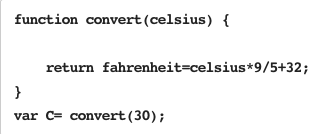

创建一个正确的.js文件并放入.html文件中加以调用
*减少代码堆积
It’s the .js文件
代码如下：

第一种方法：弹框显示
代码如下：
效果如图：
第二种方法：直接文字显示
代码如下：
效果如图：
by positioning, rotating and scaling them on an infinite canvas
the only limit is your imagination
want to know more?
use the source, Luke!
one more thing...
have you noticed it’s in 3D*?
* beat that, prezi ;)